through the lens of OCaml/F#
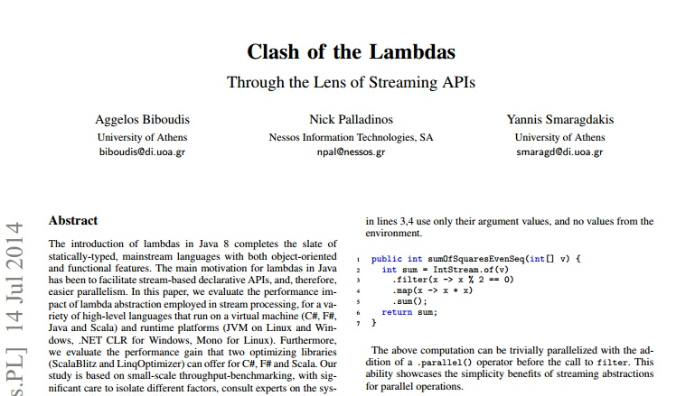 ICOOOLPS'14 arxiv
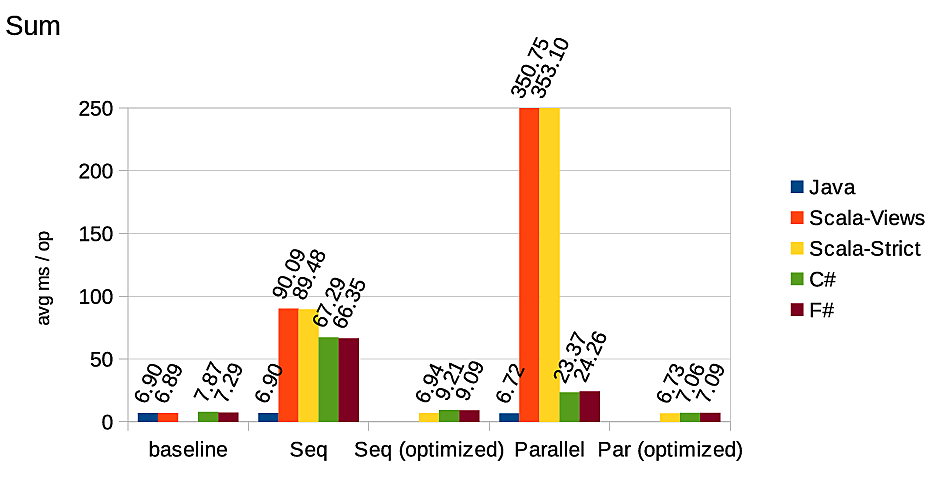
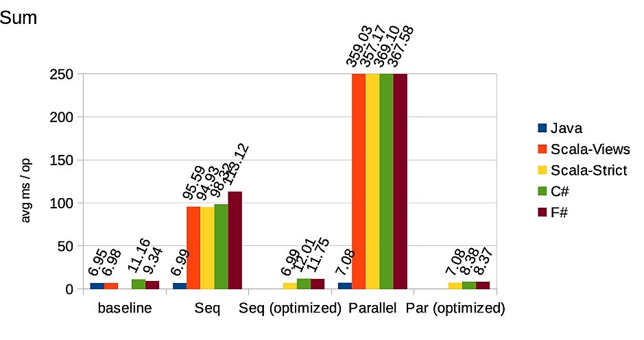
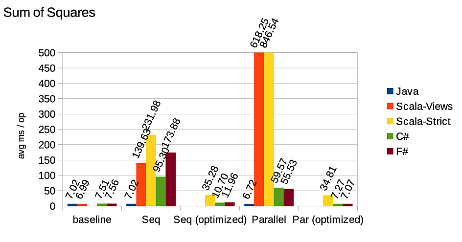
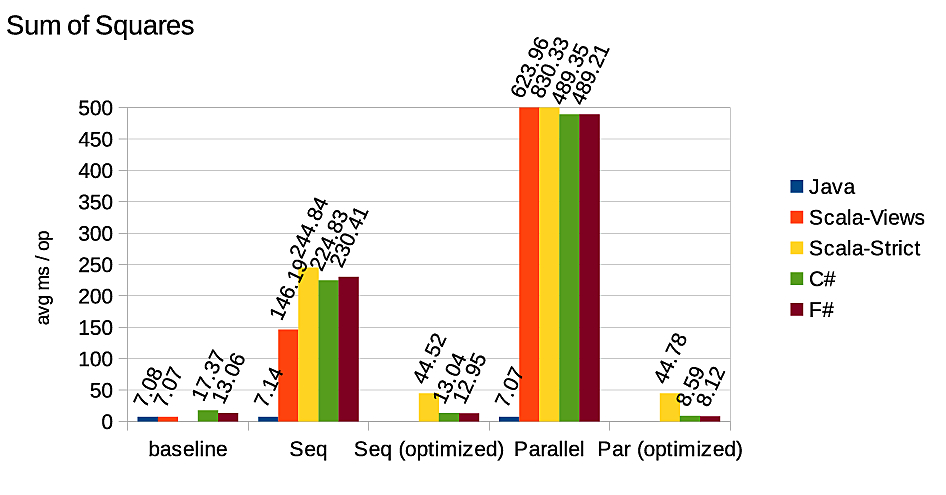
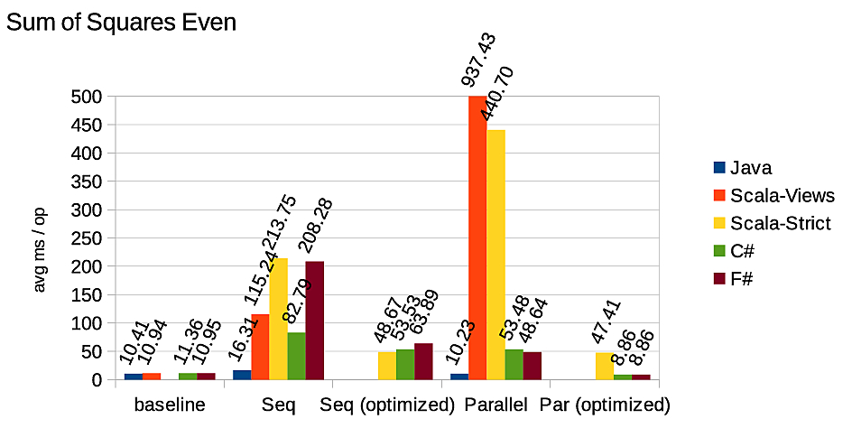
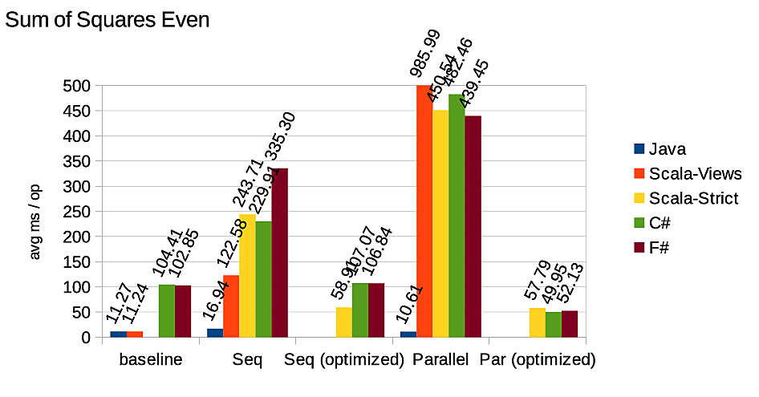
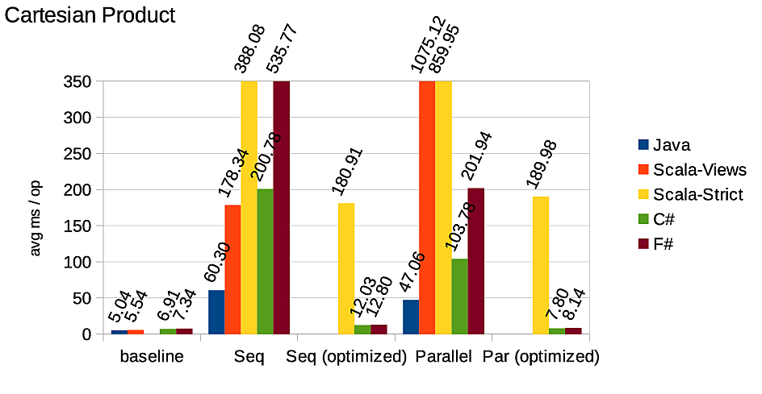
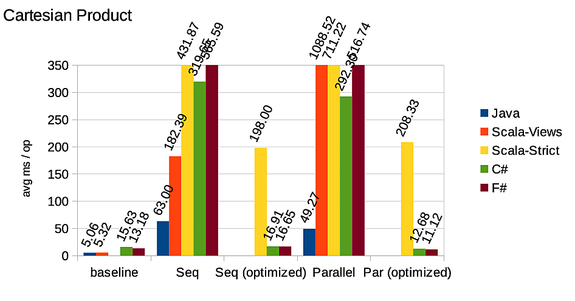
1:
|
source |> inter |> inter |> inter |> terminal |
1: 2: 3: 4: 5: 6: 7: |
// let (|>) a f = f a let data = [| 1..10000000 |] data |> Stream.ofArray |> Stream.filter (fun i -> i % 2 = 0) |> Stream.map (fun i -> i * i) |> Stream.sum |
1: 2: 3: 4: 5: 6: 7: 8: 9: 10: 11: 12: |
type Stream<'T> = unit -> (unit -> 'T) val ofArray : 'T[] -> Stream<'T> let ofArray values = fun () -> let index = ref -1 (fun () -> incr index if !index < Array.length values then f values.[!index]) else raise StreamEnd) |
1: 2: 3: 4: 5: |
val map : ('T -> 'R) -> Stream<'T> -> Stream<'R> let map f stream = fun () -> let next = stream () fun () -> f (next ()) |
1: 2: 3: 4: 5: 6: 7: |
val filter : ('T -> bool) -> Stream<'T> -> Stream<'T> let filter p stream = let rec loop v next = if p v then v else loop (next ()) next fun () -> let next = stream () fun () -> loop (next ()) next |
1: 2: 3: 4: 5: 6: 7: 8: 9: 10: 11: 12: 13: 14: 15: |
val iter : ('T -> unit) -> Stream<'T> -> unit let iter f stream let rec loop v next = f v; loop (next ()) next let next = stream () try loop (next ()) next with StreamEnd -> () val sum : Stream<'T> -> int let sum stream = let sum = ref 0 iter (fun v -> sum := !sum + v) stream !sum |
1: 2: 3: 4: 5: |
val zip : Stream<'T> -> Stream<'R> -> Stream<'T * 'R> let zip stream stream' = fun () -> let next, next' = stream (), stream' () fun () -> (next (), next' ()) |
1: 2: 3: 4: 5: 6: 7: 8: 9: 10: 11: 12: 13: 14: 15: 16: 17: 18: |
val flatMap : ('T -> Stream<'R>) -> Stream<'T> -> Stream<'R> let flatMap f stream = let current = ref None fun () -> let next = stream () fun () -> let rec loop () = match !current with | None -> current := Some (f (next ())) loop () | Some next' -> try next' () with StreamEnd -> current := f (next ()) loop () loop () |
1: 2: 3: 4: |
Stream.OfArray(data) .filter(i -> i % 2 == 0) .map(i -> i * i) .sum(); |
The source is pushing data down the pipeline.
1: 2: 3: 4: |
val iter : ('T -> unit) -> 'T[] -> unit let iter f values = for value in values do f value |
1:
|
'T[] -> ('T -> unit) -> unit |
1: 2: 3: 4: 5: 6: |
type Stream<'T> = ('T -> unit) -> unit val ofArray : 'T[] -> Stream<'T> let ofArray values k = for value in values do k value |
1: 2: 3: 4: 5: |
type Stream = ('T -> unit) -> unit val map : ('T -> 'R) -> Stream<'T> -> Stream<'R> let map f stream = fun k -> stream (fun v -> k (f v)) |
1: 2: 3: |
val filter : ('T -> bool) -> Stream<'T> -> Stream<'T> let filter f stream = fun k -> stream (fun v -> if f v then k v else ()) |
1: 2: 3: 4: 5: |
val sum : Stream<'T> -> int let sum stream = let sum = ref 0 stream (fun v -> sum := !sum + v) !sum |
1: 2: 3: |
val flatMap : ('T -> Stream<'R>) -> Stream<'T> -> Stream<'R> let flatMap f stream = fun k -> stream (fun v -> let stream' = f v in stream' k) |
1:
|
Stream.zip : Stream<'T> -> Stream<'S> -> Stream<'T * 'S> |
Zip needs to synchronise the flow of values.
Zip needs to pull!
1: 2: 3: 4: 5: 6: 7: 8: 9: 10: 11: |
type Stream<'T> = ('T -> unit) -> unit type StreamPull<'T> = unit -> (unit -> 'T) val toPull : Stream<'T> -> StreamPull<'T> let toPull stream = ??? val zip : Stream<'T> -> Stream<'R> -> Stream<'T * 'R> let zip stream stream' = let pullStream, pullStream' = toPull stream, toPull stream' let next, next' = pullStream (), pullStream' () fun k -> k (next (), next' ()) |
1: 2: 3: 4: 5: 6: 7: 8: |
/// Provides functions for iteration type Iterable = { Bulk : unit -> unit TryAdvance : unit -> bool } /// Represents a Stream of values. type Stream<'T> = Stream of ('T -> unit) -> Iterable |
1: 2: 3: 4: 5: 6: 7: 8: 9: 10: 11: 12: 13: 14: 15: 16: |
val ofArray : 'T[] -> Stream<'T> let ofArray values = fun k -> let bulk () = for value in values do k value let index = ref -1 let tryAdvance () = incr index; if !index < Array.length values then (k values.[!index]) true else false { Builk = bulk; TryAdvance = tryAdvance } |
1: 2: 3: 4: 5: 6: 7: 8: 9: 10: 11: 12: 13: 14: 15: |
val toPull : Stream<'T> -> StreamPull<'T> let toPull stream = fun () -> let current = ref None let { Bulk = _; TryAdvance = next } = stream (fun v -> current := v) fun () -> let rec loop () = if next () then match !current with | Some v -> current := None v | None -> loop () else raise StreamEnd loop () |
1: 2: 3: 4: 5: 6: 7: 8: 9: 10: 11: 12: 13: 14: 15: 16: 17: 18: |
val toPull : Stream<'T> -> StreamPull<'T> let toPull stream = fun () -> let buffer = new ResizeArray<'T>() let { Bulk = _; TryAdvance = next } = stream (fun v -> buffer.Add(v)) let index = ref -1 fun () -> let rec loop () = incr index if !index < buffer.Count then buffer.[!index] else buffer.Clear() index := -1 if next () then loop () else raise StreamEnd loop () |
1: 2: 3: 4: 5: 6: 7: 8: |
let pull = [|1..10|] |> Stream.ofArray |> Stream.flatMap (fun _ -> Stream.infinite) |> Stream.toPull let next = pull () next () // OutOfMemory Exception |
Implements a rich set of operations
1: 2: 3: 4: 5: 6: |
let data = [| 1..10000000 |] data |> ParStream.ofArray |> ParStream.filter (fun x -> x % 2 = 0) |> ParStream.map (fun x -> x * x) |> ParStream.sum |
1: 2: 3: 4: 5: 6: 7: 8: 9: 10: 11: |
type ParStream<'T> = (unit -> ('T -> unit)) -> unit val ofArray : 'T[] -> ParStream<'T> let ofArray values = fun thunk -> let forks = values |> partitions |> Array.map (fun p -> (p, thunk ())) |> Array.map (fun (p, k) -> fork p k) join forks |
1: 2: 3: 4: 5: 6: 7: 8: |
type ParStream<'T> = (unit -> ('T -> unit)) -> unit val map : ('T -> 'R) -> ParStream<'T> -> ParStream<'R> let map f stream = fun thunk -> stream (fun () -> let k = thunk () (fun v -> k (f v))) |
1: 2: 3: 4: 5: 6: 7: 8: 9: 10: 11: |
type ParStream<'T> = (unit -> ('T -> unit)) -> unit val sum : ParStream<'T> -> int let sum stream = let array = new ResizeArray<int ref>() stream (fun () -> let sum = ref 0 array.Add(sum) (fun v -> sum := sum + v) ) array |> Array.map (fun sum -> !sum) |> Array.sum |
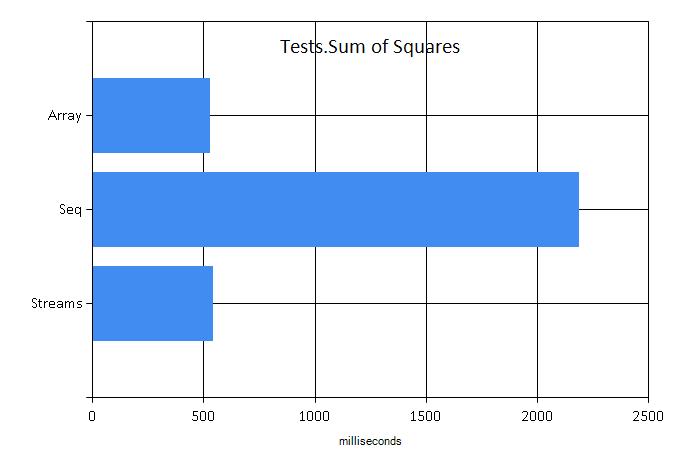
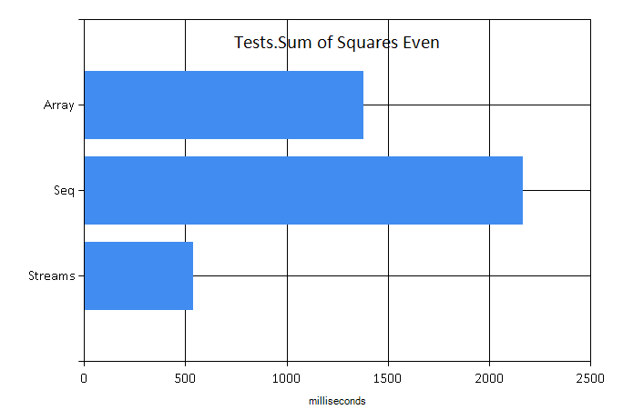
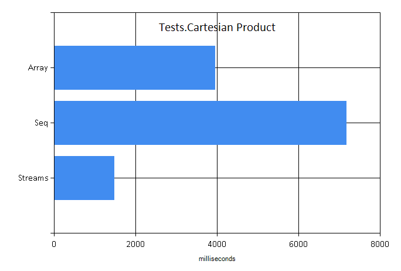
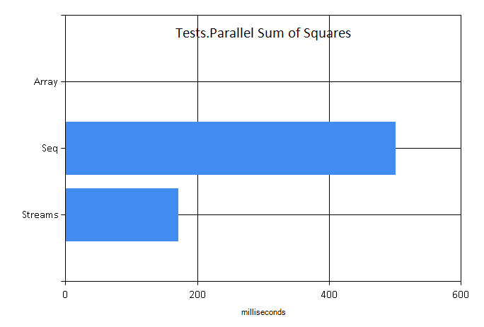
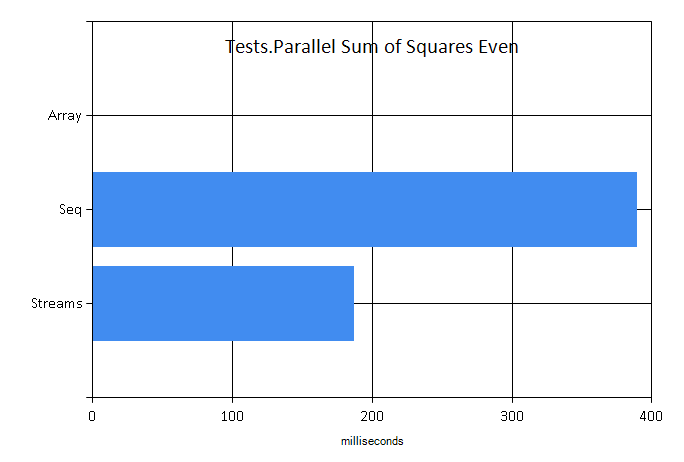
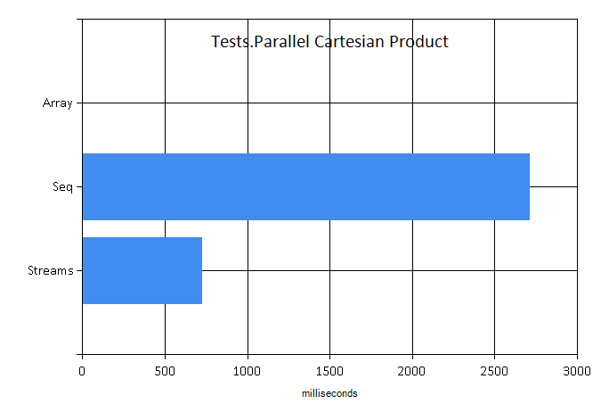
Example: a word count
1: 2: 3: 4: 5: 6: 7: 8: |
cfiles |> CloudStream.ofCloudFiles CloudFile.ReadLines |> CloudStream.collect Stream.ofSeq |> CloudStream.collect (fun line -> splitWords line |> Stream.ofArray) |> CloudStream.filter wordFilter |> CloudStream.countBy id |> CloudStream.sortBy (fun (_,c) -> -c) count |> CloudStream.toCloudArray |
Write beautiful functional code with the performance of imperative code.
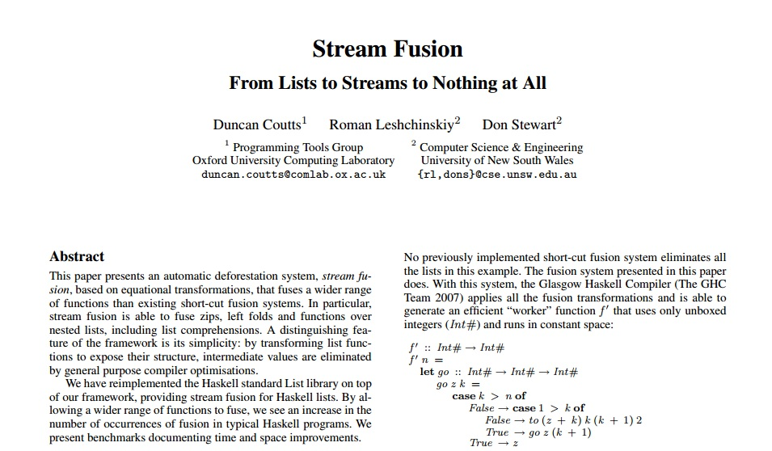 http://code.haskell.org/~dons/papers/icfp088-coutts.pdf
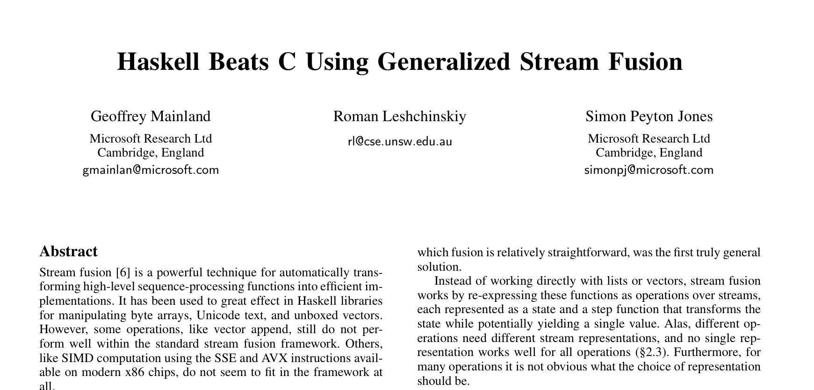 http://research.microsoft.com/en-us/um/people/simonpj/papers/ndp/haskell-beats-C.pdf
In principal, can be always fused (in-lined).
Not always done by F#/OCaml compilers.
by @biboudis
https://github.com/biboudis/sml-streams
MLton appears to always be fusing.